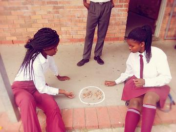
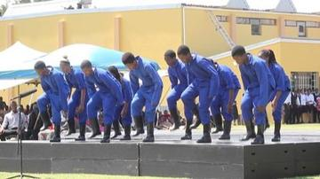
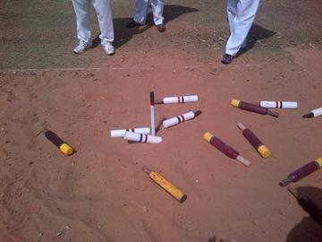
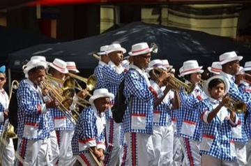
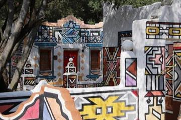

Home / Deep Past and First Games / Africa: Southern Africa
Encyclopedia ID 1080
Moruba / Ncuva
Also known as Ncuva · Moruba
Mancala game of the Pedi (Moruba); Ncuva is an official indigenous games code.
Heritage note
Part of the living heritage of South Africa.
Origins
Usually placed in the era of Deep Past and First Games (before about 3000 BCE), although its exact origins are uncertain, within the cultural world of Africa: Southern Africa.
Sources
More from South Africa




Kaapse Klopse
Malaysia +1 · Street and playground gamesKati
Kenya +1 · Street and playground games
Ndebele geometric wall painting
South Africa · Crafts and makingPlay preview · in the Paper & Paint of the World app